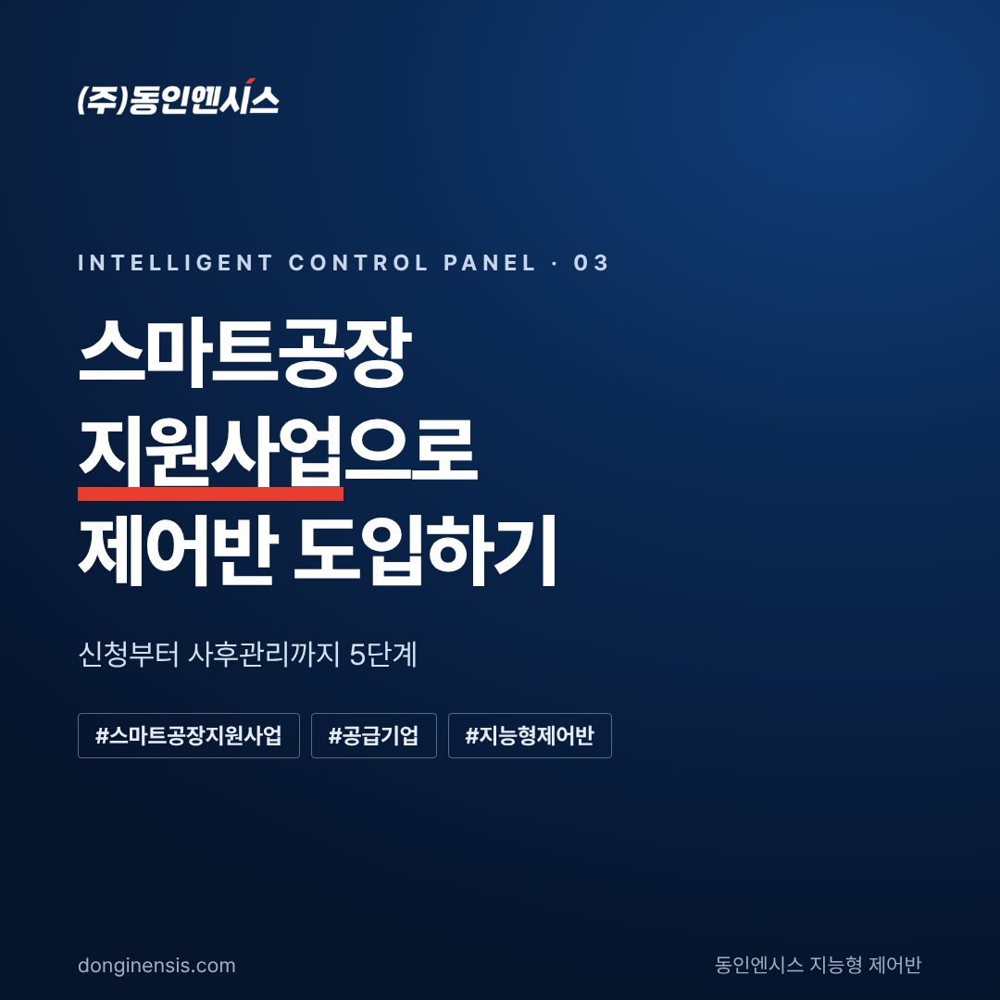
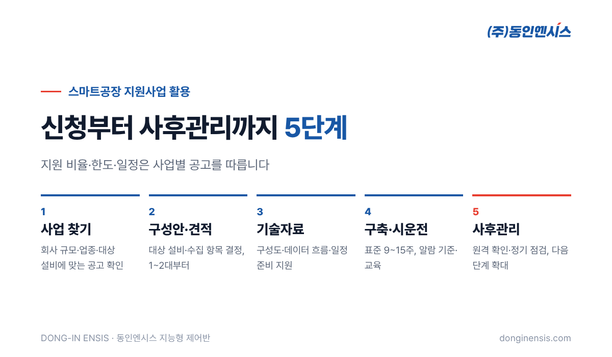
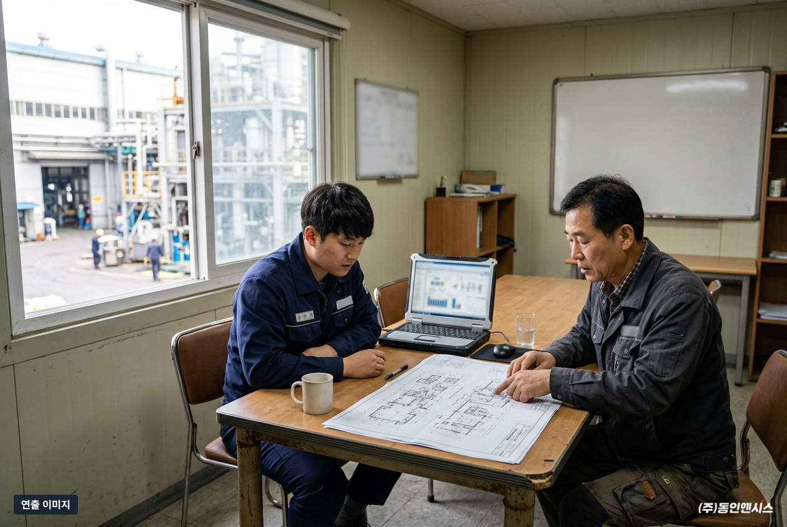
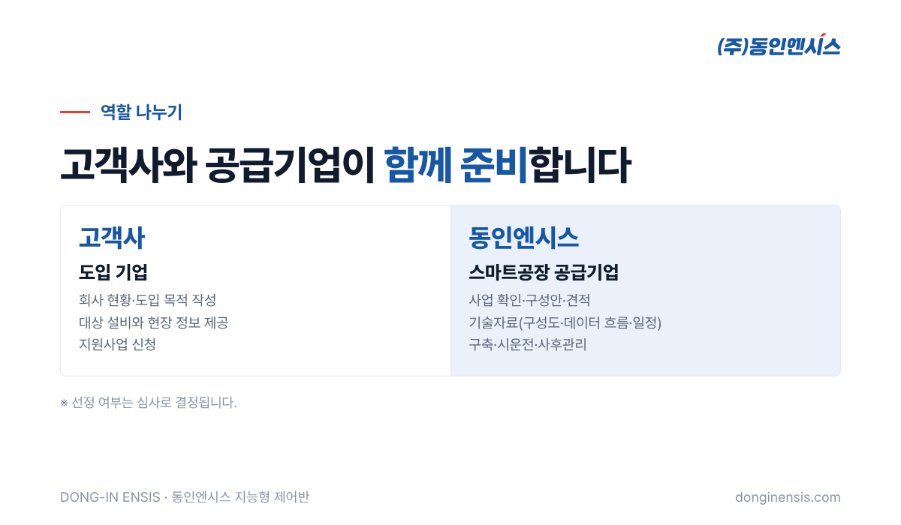
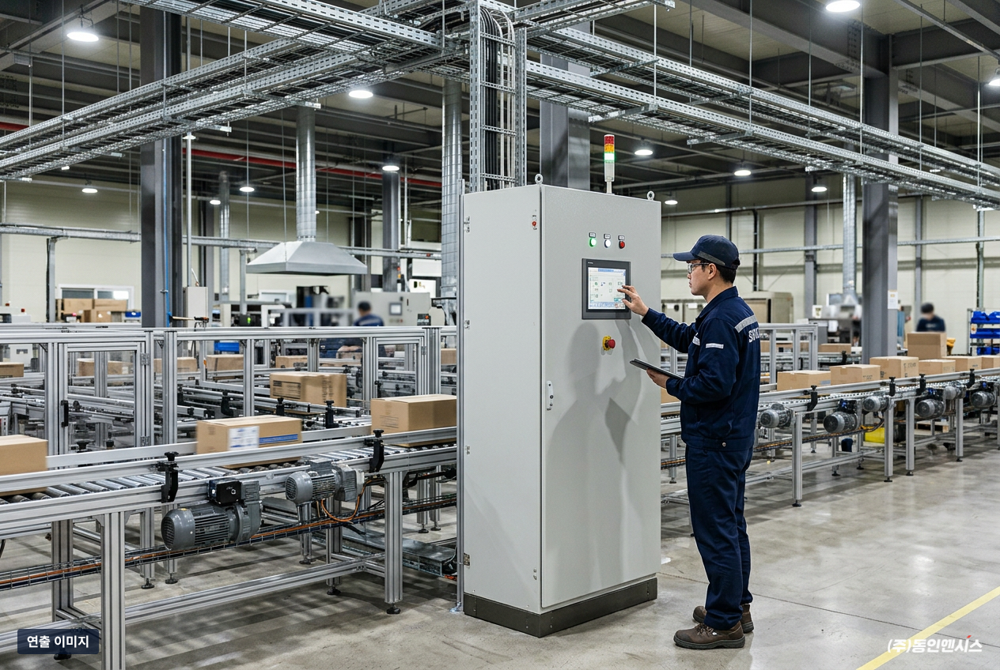

설비를 데이터로 관리하고 싶은데 비용이 걱정이라면, 가장 먼저 살펴볼 것이 정부의 스마트공장 지원사업입니다. 이 글은 2026년 10월 스마트공장 공급기업으로 등록한 동인엔시스가, 지원사업을 활용해 지능형 제어반을 도입하는 과정을 다섯 단계로 정리한 것입니다. 동인엔시스는 1991년부터 부산에서 산업·선박용 제어반을 설계하고 제작해 온 회사로, 이 절차의 대부분을 고객사와 함께 진행합니다.
본격적인 절차에 앞서 세 가지를 기억해 두시면 준비가 훨씬 수월합니다.
스마트공장이라고 하면 큰 화면과 생산관리 시스템부터 떠올리기 쉽습니다. 하지만 시스템이 제 역할을 하려면 현장 설비에서 믿을 수 있는 데이터가 먼저 들어와야 합니다. 설비 데이터가 없으면 화면은 있어도 볼 것이 없습니다.
지능형 제어반은 이 출발점을 맡습니다. 설비를 제어하는 제어반이 데이터 수집까지 함께 하기 때문에, 데이터를 모으는 장비를 따로 붙이지 않아도 됩니다. 현장에 들어가는 장비가 하나로 줄어드니 구성안이 단순해지고, 심사에서 설명하기도 쉬워집니다.
또 하나는 결과가 숫자로 남는다는 점입니다. 스마트공장 지원사업은 구축 후 성과를 확인하는 경우가 많은데, 설비 온도와 전류, 가동 상태가 기록으로 쌓이면 도입 전후를 비교할 근거가 생깁니다. 설비를 그대로 두고 제어반만 교체하거나 새로 설치하는 방식이라 생산을 오래 멈추지 않아도 된다는 점도 현장에서 반기는 부분입니다.
아래 순서는 일반적인 흐름이며, 사업마다 서류와 일정이 조금씩 다릅니다.

스마트공장 지원사업은 종류가 여러 가지이고, 해마다 이름과 조건이 조금씩 바뀝니다. 그래서 첫 단계는 지금 공고된 사업 가운데 우리 회사 규모와 업종, 도입하려는 내용에 맞는 것을 찾는 일입니다.
동인엔시스는 이 단계에서 회사 상황과 대상 설비를 듣고, 활용할 수 있는 사업을 함께 확인합니다. 이때 "어떤 설비가 멈추면 가장 곤란한지", "지금 설비 점검은 어떻게 하는지"를 알려 주시면 사업 방향을 잡기가 훨씬 쉬워집니다.
사업이 정해지면 무엇을 어디에 얼마나 도입할지 구성안을 만듭니다. 지능형 제어반은 설비를 돌리는 동시에 온도·전류·진동 값을 남기는 장치라서, 어떤 설비의 어떤 값을 모을지가 구성안의 핵심입니다.
금액을 좌우하는 것은 연결할 설비가 몇 대인지, 모터가 얼마나 큰지, 무엇을 측정할지, 통신 여건이 어떤지, 그리고 지금 제어반을 새것으로 바꿀지입니다. 그래서 가능하면 현장을 먼저 보고 숫자를 냅니다. 처음부터 공장 전체를 담기보다 중요한 설비 1~2대로 시작하는 구성이 예산과 효과를 함께 확인하기에 좋습니다.
지원사업 신청에서 가장 손이 많이 가는 부분이 기술자료입니다. 도입하려는 시스템의 구조, 기대 효과, 일정 같은 내용을 심사위원이 이해할 수 있게 정리해야 합니다.
동인엔시스는 공급기업으로서 이 기술자료 준비를 지원합니다. 설비와 제어반 구성도, 데이터가 어디서 어디로 흐르는지, 구축 일정 같은 기술적인 부분은 저희가 맡고, 회사 현황과 도입 목적 같은 부분은 고객사가 채우는 식으로 역할을 나눕니다.

선정되면 실제 구축에 들어갑니다. 지능형 제어반 표준 구축 기간은 9~15주이며, 현장 조건에 따라 달라질 수 있습니다.
지원사업은 정해진 기간 안에 구축과 결과 보고를 마쳐야 하는 경우가 많습니다. 그래서 착수 전에 일정표를 함께 만들고, 제작 기간이 긴 제어반은 가능한 한 일찍 설계를 확정합니다.
구축이 끝나도 일은 이어집니다. 원격으로 설비 상태를 확인하고, 정기 점검과 알람 기준 조정, 담당자 교육, 현장 대응과 부품 교체를 지원합니다.
쌓인 데이터는 다음 투자를 판단하는 근거가 됩니다. 처음 1~2대에서 효과를 확인했다면, 다음 해 지원사업에서 대상 설비를 넓히는 계획을 세울 수 있습니다. 데이터가 쌓여 있으면 다음 신청서에 쓸 근거도 그만큼 탄탄해집니다.


Q. 지원 비율은 얼마나 되나요? 사업과 연도에 따라 다릅니다. 신청하려는 사업의 공고를 기준으로 확인해야 하며, 상담할 때 해당 공고를 함께 살펴봅니다.
Q. 지원사업 일정에 맞추지 못하면 어떻게 하나요? 그래서 1단계에서 공고 일정을 먼저 확인하고, 제작 기간을 거꾸로 계산해 준비를 시작합니다. 일정이 빠듯한 사업이라면 미리 말씀드립니다.
Q. 지원사업 없이 먼저 작게 시작할 수도 있나요? 가능합니다. 설비 1~2대로 먼저 시작해 효과를 본 뒤, 확대할 때 지원사업을 활용하는 방법도 있습니다.
Q. 기존 제어반이 있는데 꼭 바꿔야 하나요? 현장 상황에 따라 다릅니다. 교체 시기가 된 제어반이라면 이번에 지능형으로 바꾸는 것이 자연스럽고, 아직 쓸 만하다면 기존 PLC 데이터를 읽어 오는 방법을 함께 검토합니다.
Q. 공급기업으로 등록돼 있다는 건 어떤 의미인가요? 스마트공장 지원사업에서 도입 기업과 함께 시스템을 구축하는 기업으로 등록돼 있다는 뜻입니다. 동인엔시스는 2026년 10월 공급기업 등록을 마쳤고, 공급기업 역량진단도 신청해 둔 상태입니다. 어떤 사업에 참여할 수 있는지는 공고 조건에 따라 함께 확인합니다.
스마트공장 지원사업은 공고가 난 뒤 움직이면 늦는 경우가 많습니다. 어떤 설비부터 데이터로 관리할지, 어느 정도 규모로 시작할지를 미리 정해 두면 공고가 났을 때 바로 신청서를 쓸 수 있습니다.
우리 공장에 맞는 지원사업과 도입 규모가 궁금하시다면 홈페이지에서 적용 가능성 진단을 신청해 주세요. 엔지니어가 확인하고 연락드립니다.
☎ 051-862-3668 | dongin@donginmne.com
아래 질문 중 하나에 실제 경험으로 답해 본문 적당한 곳에 넣어 주세요. 사람이 직접 쓴 문장이 들어가면 네이버에서 저품질 위험이 줄고 노출에 도움이 됩니다.